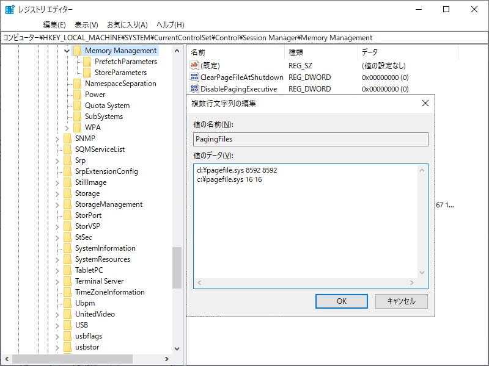
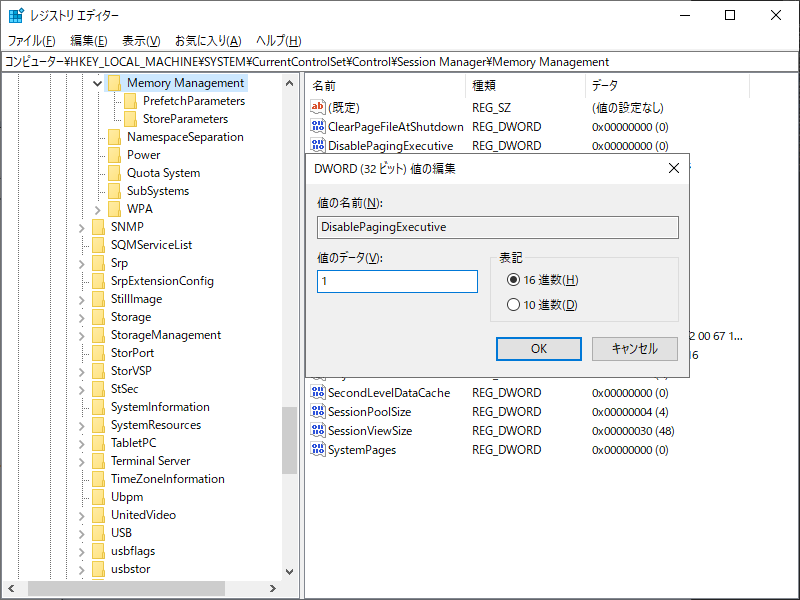

本記事はマイクロソフト社員によって公開されております。
こんにちは、Windows サポートチームの栗木です。
本記事では、Cドライブにページング ファイルを配置していない環境で稀にシャットダウン時に BSoD (ブルースクリーン) またはハングが発生する事象とその対応策をご紹介します。
適用対象の OS
- Windows 10
- Windows Server 2012
- Windows Server 2012 R2
- Windows Server 2016
- Windows Server 2019
※ Windows 11 および Windows Server 2022 以降の製品では発生いたしません。
現象
OS をシャットダウンまたは再起動する際、「シャットダウンしています」または「再起動しています」が表示された状態のまま先に進まず、BSoD (Bug Check Code 0x9F) が発生する、あるいはいつまで待ってもシャットダウンが完了しない。
要因
ページング ファイルが Cドライブ（Windows フォルダーが存在するドライブ）に配置されていないことに起因します。
シャットダウンが開始されるとページング ファイルが配置されていないドライブのディスクは他のデバイスよりも優先して電源が落とされます。すでに Cドライブのディスクの電源が落とされている状態で、シャットダウン処理に必要なドライバーのコード領域がページ アウトされていると、ドライバーのコードを物理メモリへ読み出すための Read 要求が処理できなくなります。これにより、処理が完了しないことをシステムが検知して BSoD (Bug Check Code 0x9F) を発生させる、または処理が完了しないためシャットダウンがいつまで待っても終わらない現象が発生します。
対応策
本件については、以下の OS に対して更新プログラムが公開されておりますので、更新プログラムの適用にてご対応ください。下記以外の適用対象の OS につきましては、更新プログラムでの修正のご用意はございません。
Windows 2019 LTSC、Windows Server 2019
April 11, 2023—KB5025229 (OS Build 17763.4252) - Microsoft Support
https://support.microsoft.com/en-us/topic/april-11-2023-kb5025229-os-build-17763-4252-e8ead788-2cd3-4c9b-8c77-d677e2d8744f
Windows 10 20H2以降
May 9, 2023—KB5026361 (OS Builds 19042.2965, 19044.2965, and 19045.2965) - Microsoft Support
https://support.microsoft.com/en-us/topic/may-9-2023-kb5026361-os-builds-19042-2965-19044-2965-and-19045-2965-3edafffe-c3cc-4010-af43-2097c84c9437
回避策
適用対象の OS に記載がある一方で、対応策として更新プログラムのご提供がない環境においては、以下の対応の実施をご検討ください。
Cドライブにページング ファイルを配置する方法とドライバーのコード領域をページアウトさせないように設定する方法のいずれかで対応が可能です。Cドライブにページング ファイルを配置する方法は、デメリットはありませんが、ドライバーのコード領域をページアウトさせないように設定すると、物理メモリに余裕のないシステムでは、動作が遅くなる可能性があります。そのため、特別な理由がなければ、Cドライブにページング ファイルを配置する方法を推奨いたします。
1. Cドライブにページング ファイルを配置
本事象は、ページング ファイルのサイズには依存しないので、Cドライブに作成するページング ファイルのサイズは、仕様上の最小値である 16MB で問題ありません。ただし、Cドライブのページングファイルが小さいと、システムが BSoD（ブルースクリーン）時にメモリダンプが作成されない可能性があるため、レジストリ エディターで優先度を変更する必要がございます。
スタート ボタンを右クリックし、ファイル名を指定して実行 を実行します。
Regedit と入力し、OK をクリックします。
以下のレジストリ サブキーを探し、選択します。
1
HKEY_LOCAL_MACHINE\System\CurrentControlSet\Control\Session Manager\Memory Management
PagingFiles をダブルクリックします。
値のデータ にて、優先したいドライブの pagefile.sys が一番上に来るように編集します。
Dドライブに十分な空き容量があり、Cドライブの空きが少ない場合は、Dドライブのページング ファイルを大きくしてメモリ ダンプの採取に備えると共に、本現象の対策のため Cドライブには最小のサイズ 16MB のページングファイルを作成します。そして、Dドライブがメモリダンプの出力に使われるよう、優先度を高く（先頭に来るように）設定します。Dドライブである必要はありませんので、環境に合わせて任意のドライブを選択してください。
以下のように設定すると、Dドライブに 8592MB、Cドライブに 16MB を設定し、8GB の物理メモリを搭載しているシステムで完全メモリ ダンプがDドライブに出力されるようになります。完全メモリ ダンプに必要なページング ファイルのサイズは、搭載している物理メモリ量 + 400MB なりますので、環境に合わせて、8592 の部分は変更してください。1
2d:\pagefile.sys 8592 8592
c:\pagefile.sys 16 16
レジストリ エディターを終了し、変更を反映するために OS を再起動します。
2. ドライバーのコード領域をページアウトさせないように設定
ドライバーのコード領域がページ アウトさせないようにレジストリ DisablePagingExecutive の値を変更します。
スタート ボタンを右クリックし、ファイル名を指定して実行 を実行します。
Regedit と入力し、OK をクリックします。
以下のレジストリ サブキーを探し、選択します。
1
HKEY_LOCAL_MACHINE\System\CurrentControlSet\Control\Session Manager\Memory Management
DisablePagingExecutive をダブル クリックします。
値のデータ を1（ページ アウトさせない）に変更します。

- レジストリ エディターを終了し、変更を反映するために OS を再起動します。
コマンドによる設定方法
ご紹介した設定は、次のコマンドをコマンドプロンプト（管理者権限）により設定が可能です。いずれかを環境に合わせて設定し、変更を反映するために OS を再起動してください。
1 | # Cドライブにページング ファイルを配置 |
参考 URL
変更履歴
- 2024/03/25: Windows 11 および Windows Server 2022 では事象が発生しないことを追記
- 2023/09/14: 更新プログラムの情報を対応策へ移動
- 2023/05/11: 更新プログラムの情報を追加
- 2021/11/04: 本 Blog の公開